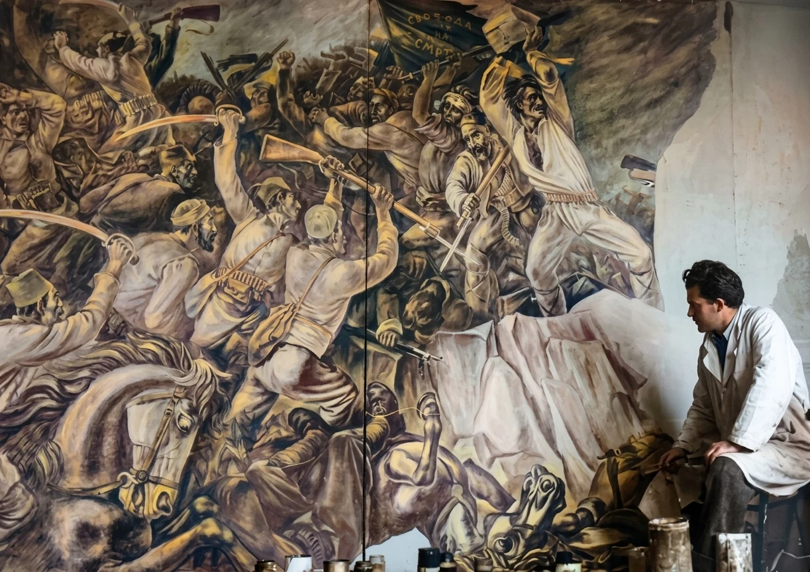
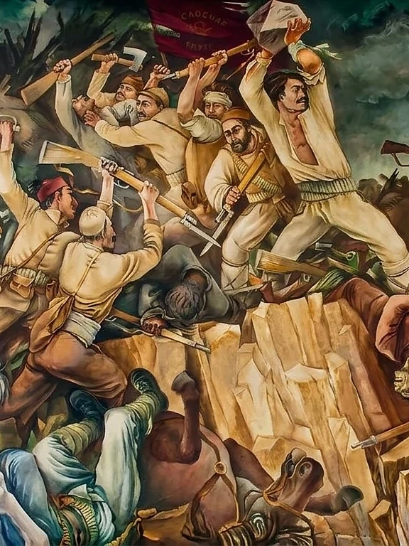
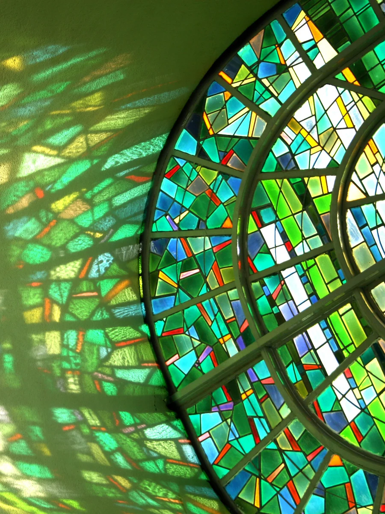

The Station Wall
In his contract Lazeski bound himself to finish the fresco in a year and a half in spite of its unusually large dimensions (5 × 45 m, or 225 square meters, in buon fresco). Owing to the size of the work, unprecedented in Yugoslavia as well as Macedonia, and the difficult working conditions, he worked on studies to solve the conceptual, artistic, and aesthetic problems of the fresco for four and a half years. The drafts, for example, took him three summers. The actual painting lasted six months with the help of his assistants, and the fresco was unveiled on November 29, 1956.
The mural was done on the front wall up to the ceiling in the hall of Skopje railway station, in a place where people were in constant motion. A continually changing, varied, and numerous public gave the painter every chance of a dialogue with the traveler. The first proposal submitted to the selection committee offered a fresco in a relatively realistic style. Dissatisfied with his own proposal, the painter worked painstakingly for several years to find a solution that would suit his instincts and abilities.
The genesis of the fresco can be followed through hundreds of drawings, sketches, and drafts in tempera, pastel, pencil, ink, and charcoal, where the realistic vision is transformed into geometric constructivism with abstract features in places. At every stage we can see the dilemmas he faced as he took on the colossal size and fixed space of the wall.
“The fresco is my wide appeal to the people around me. The painted fresco comes to belong to everybody, it is public property, a kind of mass medium.”

Learning in Paris
Convinced that he did not know modern art, its rules and character, or the essential questions of a purely artistic nature well enough, Lazeski arrived in the December grayness of Paris in 1945 on a French government scholarship.
At first, from 1945 to 1947, he enrolled at the École nationale supérieure des beaux-arts in the fresco studio of Ducos de la Haille, from which he still has his original certificate. Firmly convinced that the new socialist society implied a new relation between art and life, Lazeski decided to make a serious study of monumental techniques: stained glass, mosaic, and fresco. While learning the language, he kept up with artistic life in the city, explored its artistic heritage, and studied art theory at the academy.
In de la Haille’s studio Lazeski worked on several murals, including Head of a Woman, Spinner, Fisherman, Shot Dead, Before the Firing Squad, Refugees, and Fallen Fighter.
Outside art school in Paris, Lazeski worked on stained glass, frescoes, and mosaics in the Mauméjean glass studio in 1947–48, easing his financial situation and enabling him to prolong his stay in the city. In 1946 he enrolled in André Lhote’s studio on the Rue d’Odessa, to which artists from all over the world came.

Ilinden 1903
His first fresco, Ilinden 1903, was dedicated to the clash at Mečkin Kamen. The dominant figure is that of an energetic Macedonian fighter standing at an angle, with a gesture full of pathos and a pose exaggerated by the monumental scale. The movement of the figures, the intertwining bodies, weapons, and horses, and the oblique stances of the rebels convey the violence of the battle. For Lazeski it was a trial before the great undertaking that followed.


The Baghdad Years
On December 15, 1959, Lazeski left for Iraq, where he was to stay until September 19, 1967, as a lecturer at the Baghdad Academy of Art, teaching composition and monumental techniques. Alongside his teaching, he quickly became part of the country’s artistic circles and joined the Baghdad Modern Art Group and the Iraq Society of Artists. He took part in their collective exhibitions and organized three solo shows, in 1962, 1966, and 1967.
He worked closely with his students on frescoes, mosaics, and stained glass and exhibited the results. His stay was also distinguished by his prolific oil painting, with about a hundred pictures. The inspiration came from what was for him a new way of life: siestas, going for water, meetings, conversations, drinking tea, and other everyday customs. He painted the desert, market, and town, and the Arab men, women, and children, especially Bedouins, who lived there. He painted people in their surroundings and the effect of the climate on them. Among these works are Gold Sand, Market, July in Baghdad, and Siesta.
Painted in the glare of the sun and the reflected light of the landscape, these works range from geometric figuration to freer abstraction. In the figurative paintings he used oils, gold foil, and other materials on wood, panel, or canvas. Smooth surfaces are set against rough ones. Broad geometric figures, buildings, and objects create a rhythm against abstract yellow-gold backgrounds. The lines follow Cubist principles, outlining forms while separating them from the background. We recognize them from the frescoes and temperas of Paris, now put to a different use.
In some of the paintings, especially those of mothers and children, the approach is close to medieval Byzantine icons. The resemblance comes through in the gold backgrounds, the drapery, the positions of the heads, and the gentle stylization of the figures. Color plays the primary role in his portrayal of Iraqi daily life. The paintings are built in warm harmonies of yellow, ocher, orange, flame red, and dark cherry, with restrained touches of blue-green and gray. The dark palette of the figures stands against the light of the gold ground.

Stained Glass at Makedonium
The Ilinden Memorial was built from the beginning with the ambition of bringing the arts together. The cooperation between Lazeski and the architects brought the light outside into a close relationship with the space within. The rays that break through the kaleidoscope of stained glass are reflected on the plain interior surfaces. This moving light continually changes the appearance of the interior, from dawn to dusk and from autumn to summer.
The four elliptical pieces of glass, made in 1972–74 and facing different directions, sit above the galleries. Their strong colors break the monotony of the white interior. In keeping with the nonfigurative character of the space, these passages of color bring the place alive and give it a quality of myth. Each piece is based on a particular range of colors, including blues, yellowish oranges, and greens. Contrasting touches are added so discreetly that the overall impression is of light filtering fluidly through them.
Sources
Sonja Abadžieva Dimitrova. Borko Lazeski. Makedonska Kniga and the Museum of Contemporary Art, Skopje, 1979. English translation by Patricia Marsh Stefanovska. Railway station, Paris, Ilinden 1903, Baghdad, and stained glass.
Spomenik Database. Skopje’s railway station mural. Archival photographs, the 1963 earthquake, and the Prilep version. The railway station photograph records Lazeski’s The National Liberation War, completed in 1956.
National Conservation Centre. Inspection of Lazeski’s stained glass at Makedonium, July 2026.